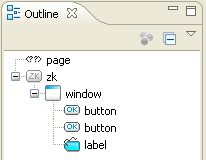
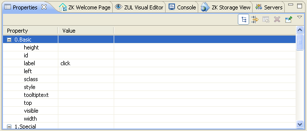
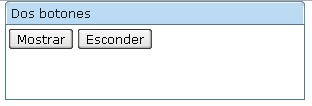
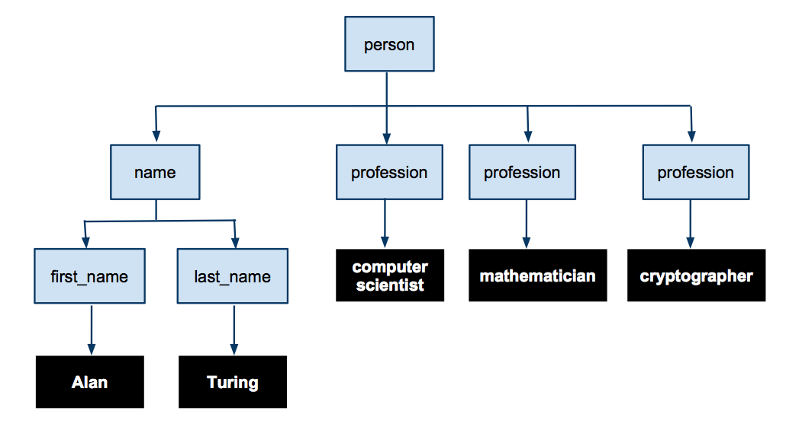
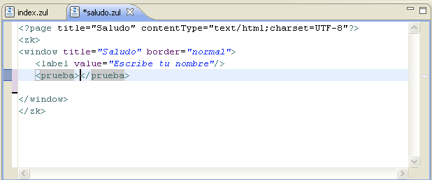
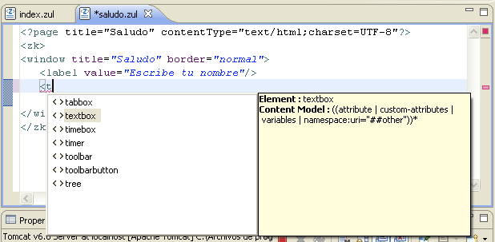
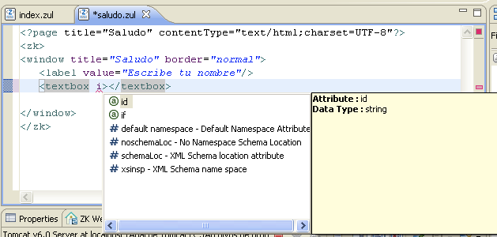
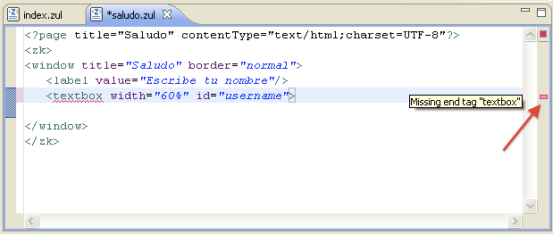

Sesión 2: El lenguaje ZUML
Ejemplo dos botones
Ejemplo básico
1. Creamos el proyecto 02-lenguaje-ZUML. Creamos el fichero dos-botones.zul en el que definimos una sencilla página con dos botones y una etiqueta. Para ello, pulsamos el botón derecho sobre la carpeta WebContent y escogemos la opción New > ZUL. Ponemos como nombre de fichero dos-botones.zul y como nombre de página Dos botones.
2. Se creará una página nueva con los datos indicados y con una ventana inicial con el título que hemos dado. La ventana contiene el texto New Content Here! que debemos borrar y sustituir por dos botones y una etiqueta. Utilizamos la paleta de componentes para arrastrar esos elementos y comprobamos en el editor visual de ZUL el aspecto que va adquiriendo la interfaz.
3. El árbol de componentes de la página debe ser como muestra la siguiente figura:

3. Modificamos las propiedades de los componentes. Podemos hacerlo manualmente, escribiendo el código XML o con el panel de propiedades. El panel de propiedades se encuentra en la parte inferior de la ventana de Eclipse. Cuando pinchamos en un componente en el editor de texto o en el editor visual el panel cambia, mostrando las propiedades del componente seleccionado. Por ejemplo, la siguiente figura muestra las propiedades de uno de los botones.

Añadimos las siguientes propiedades:
-
Ventana
- title: Dos botones
- width: 300px
- border: normal
-
Primer botón
- id: btn1
- label: Mostrar
-
Segundo botón
- id: btn2
- label: Esconder
-
Etiqueta
- id: label1
- visible: false
- value: Ahora me ves, ahora no
4. Podemos comprobar el aspecto de la página en el editor visual ZK, accediendo a la dirección http://localhost:8080/sesion1/dos-botones.zul o pulsando sobre el fichero dos-botones.zul el botón derecho y seleccionado Run As > Run on Server. Aparecerán los botones, pero no la etiqueta. Y no se ejecutará ninguna acción al pulsar los botones.

5. Por último, vamos a añadir un código a ejecutar en el momento en que el usuario pulse el botón. Ya veremos más adelante que hay distintas formas de hacerlo. Por ahora, vamos a utilizar una de las más sencillas: modificar desde un componente una propiedad de otro componente.
En el código XML, vemos que los atributos onClick están vacíos. Escribimos en el botón Mostrar:
onClick="label1.visible = true"
Y en el botón Esconder escribimos lo contrario:
onClick="label1.visible = false"
6. Salvamos la página en Eclipse, la recargamos en el navegador y comprobamos el funcionamiento del código que acabamos de añadir. Hemos ligado el evento onClick de cada botón con la modificación de la propiedad visible que hace que el componente se visualice o no en la ventana.
El código completo del ejemplo es:
<?page title="Dos botones" contentType="text/html;charset=UTF-8"?>
<zk>
<window title="Dos botones" border="normal" width="300px">
<button label="Mostrar" onClick="label1.visible = true" id="btn1"/>
<button label="Esconder" onClick="label1.visible = false" id="btn2"/>
<label value="Ahora me ves, ahora no" id="label1" visible="false"/>
</window>
</zk>
7. Por último, podemos analizar el paso de mensajes entre el cliente y el servidor utilizando algún depurador y monitorizador de la conexión HTTP. Uno muy recomendable es el que está incluido en el útil plugin Firebug de Firefox. El plugin se encuentra disponible en la dirección http://getfirebug.com/
Si observamos la primera petición, veremos que el loader de ZK devuelve una página completa HTML con la información sobre la ventana, los botones y la etiqueta.
Cuando ZK utiliza el enfoque Ajax es cuando el usuario pulsa uno de los botones. Por ejemplo, cuando se pulsa el botón Mostrar podemos comprobar entonces que se envía una petición POST con los siguientes datos:
cmd.0: onClick data.0: 24 data.0: 7 data.0: dtid: gi161 uuid.0: z_i1_2
Se está enviando al motor de actualización en el servidor de ZK una petición que contiene el comando onClic y los datos necesarios para que el servidor la procese correctamente, como el identificador del componente que ha originado el evento.
El servidor de actualización devuelve una respuesta en formato XML, en la que indica el atributo visibility del componente z_il_4 se debe cambiar a true:
<?xml version="1.0" encoding="UTF-8"?>
<rs>
<rid>9</rid>
<r>
<c>setAttr</c>
<d>z_i1_4</d>
<d>visibility</d>
<d>true</d>
</r>
</rs>
Se trata de código XML que es interpretado por el motor ZK en el cliente. No se ha devuelto como respuesta la página completa, sino únicamente la indicación del cambio en uno de los componentes.
Todo este funcionamiento Ajax es transparente a nosotros como desarrolladores ZK. Para nosotros el cliente a generado un evento que ha cambiado una determinada propiedad de uno de los componentes.
Componentes y acciones del usuario
Cada componente de ZK captura un determinado tipo de evento de la interacción con el usuario. Por ejemplo, el componente button detecta cuando el usuario pincha el cursor sobre él. O un ítem de un menú detecta cuando el usuario hace click sobre él. Todas estas interacciones del usuario generan eventos sobre el componente que pueden ser capturados y a los que la aplicación puede responder con una determinada acción. En el ejemplo anterior, hemos comprobado que una forma de acción es la modificación de los atributos de otros componentes. Más adelante veremos ejemplos mucho más elaborados de acciones, en las que se utiliza código JavaScript o código Java.
Existen acciones del usuario que captura y procesa el propio componente sin que se tenga que definir ningún comportamiento en la aplicación. Vamos a ver un ejemplo.
1. Modificamos el componente window del ejemplo, definiendo los atributos sizable, minheight y minwidth de la siguiente forma:
<window title="Dos botones" height="100px" width="300px" border="normal" minheight="100" minwidth="300" sizable="true">
2. Accedemos desde el navegador a la página del ejemplo para comprobar el funcionamiento del ejemplo.
Podemos ver que el atributo sizable="true" permite que el usuario modifique el tamaño de la ventana. Los atributos minheight y minwidth definen su tamaño mínimo. Cuando el usuario mueve el cursor sobre los bordes de la ventana o sobre su esquina inferior izquierda cambia su forma, indicando que puede cambiar sus dimensiones. Si pincha el botón y lo arrastra, aparecerá una previsualización del nuevo tamaño con un borde discontinuo. Cuando el usuario suelta el botón, la ventana se redimensiona y sus componentes se reorganizan.
Todas estas acciones están predefinidas en el comportamiento del propio componente de ZK; no tenemos que definirlas en el código de la aplicación. Están incluidas en el código JavaScript del componente y se ejecutan en el lado del cliente, sin generar ningún evento.
El lenguaje ZUML
El lenguaje en el que se definen las interfaces de usuario en ZK se denomina ZUML (ZK User Interface Markup Language). Es un lenguaje basado en XML. Veamos rápidamente sus elementos principales junto con algunos ejemplos:
Componentes: Cada elemento de una página ZK define un componente que es creado por el ZK Loader. Los atributos del componente definen los valores iniciales que se asignan al componente recién creado.
En el siguiente ejemplo se definen varios componentes: una ventana (window) que contiene una etiqueta (label), un separador (separator) y dos botones (button). Los atributos de esos componentes definen el estado inicial de la interfaz: el título de la ventana, el contenido de la etiqueta
<window title="Vota" border="normal"> <label id="label">Te gusta ZK? </label> <separator/> <button label="Si" onClick="label.value = self.label"/> <button label="No" onClick="label.value = self.label"/> </window>
Instrucciones de procesamiento ZK: directivas globales que se escriben al comienzo de la página y permiten definir ciertos comportamientos que afectan a toda la página, como macros o código de inicialización.
<!-- special.zul: Common Definitions --> <?init zscript="/WEB-INF/macros/special.zs"?> <?component name="special" macroURI="/WEB-INF/macros/special.zuml" class="Special"?> <?component name="another" macroURI="/WEB-INF/macros/another.zuml"?>
Lenguaje de expresiones EL: lenguaje similar al de JSP, que permite acceder a variables y componentes. Utilizan la sintaxis ${exp}
<element attr1=”${bean.property}”.../>
${map[entry]}
<another-element> ${3+counter} is ${empty map}</another-element>
Objetos implícitos: son como variables globales manejadas por el sistema. Se pueden utilizar para obtener información sobre el sistema y el cliente. También son una forma pasar información entre páginas.
Ejemplos: self, event, page, session, each.
<?page title="Hola navegador" contentType="text/html;charset=UTF-8"?>
<zk>
<window title="Hola navegador" border="normal">
${execution.userAgent}:
${execution.localName}:
${execution.serverPort}:
${execution.parameterMap}:
${param.par1}
</window>
</zk>
zscript: lenguaje de script en el que expresar acciones realizadas por los componentes a respuesta de eventos producidos por la interacción con el usuario.
<window title="Hello" border="normal">
<button label="Say Hello" onClick="sayHello()"/>
<zscript>
int count = 0;
void sayHello() { //declare a global function
alert("Hello World! "+ ++count);
}
</zscript>
</window>
Atributos ZK: son atributos de los componentes propios de ZK, utilizados para controlar el componente desde el framework. Proporcionan utilidades como el evaluador condicional if o iteradores foreach.
<zscript>
contacts = new String[] {"Monday", "Tuesday", "Wednesday"};
</zscript>
<listbox width="100px">
<listitem label="${each}" forEach="${contacts}"/>
</listbox>
Espacios de nombres XML: ZUML permite combinar instrucciones y componentes ZK con elementos XHTML. Para ello utiliza varios tipos de espacios de nombres con los que se identifican claramente el tipo de elemento que se está utilizando en cada momento.
<window title="mix HTML demo" xmlns:h="http://www.w3.org/1999/xhtml">
<h:table border="1">
<h:tr id="row1">
<h:td> Columna 1</h:td>
<h:td> Casilla 1</h:td>
</h:tr>
</h:table>
<button label="add" onClick="row1.appendChild(new org.zkoss.zhtml.Td())"/>
</window>
ZUML y XML
Las interfaces de usuario ZK se definen con el lenguaje ZUML (ZK User Interface Marckup Language) que es un lenguaje XML. Vamos a repasar algunas de las características principales de XML, que también deben cumplir los documentos ZUML.
XML define un estándar para el marcado de documentos. Define una sintaxis genérica usada para marcar los datos con etiquetas sencillas y legibles por humanos. Proporciona un formato estándar para documentos que es lo suficientemente flexible para ser fácilmente adaptado para dominios tan diversos como sitios web (XHTML), libros (DocBook), intercambio de datos, Ajax, gráficos vectoriales (SVG), genealogía, serialización de objetos, llamadas a procedimientos remotos, etc.
Los documentos XML definen elementos estructurados, con atributos, organizados jerárquicamente, que pueden ser recorridos, analizados y validados de forma sencilla y automatizada.
El siguiente es un ejemplo de código XML, a partir del que podemos hacer notar alguna de las características:
<?xml version="1.0" encoding="UTF-8"?>
<people xmlns="http://www.cafeconleche.org/namespaces/people">
<person born="1912" died="1954">
<name>
<first_name>Alan</first_name>
<last_name>Turing</last_name>
</name>
<profession>computer scientist</profession>
<profession>mathematician</profession>
<profession>cryptographer</profession>
</person>
<person born="1918" died="1988">
<name>
<first_name>Richard</first_name>
<middle_initial>P</middle_initial>
<last_name>Feynman</last_name>
</name>
<profession>physicist</profession>
<hobby>Playing the bongoes</hobby>
</person>
</people>
En primer lugar, un documento XML contiene sólo texto nunca datos binarios. El texto está codificado con la codificación especificada en la cabecera, UTF-8 en este caso. Ésta es la codificación por defecto de un documento XML si no se define ningún valor para el atributo encoding.
Elementos, etiquetas y datos de texto
Los documentos XML contienen elementos, etiquetas y datos de texto. Algunos de los elementos del ejemplo son people, person, name, first_name o profession. Cada elemento está delimitado por una etiqueta de comienzo y una etiqueta de final. Por ejemplo, el elemento first_name comienza por la etiqueta <first_name> y la etiqueta </first_name>. Entre ambas etiquetas se describe el contenido del elemento, una cadena de texto o también otros elementos.
Es posible también definir elementos vacíos con una única etiqueta. En ese caso, la etiqueta debe contener el carácter de finalización. Por ejemplo, el elemento br en XHTML se define con una única etiqueta:
<br/>
XML es sensible a las mayúsculas. Los elementos person y Person son distintos. En el caso de ZK, todos los elementos están definidos en minúsculas.
Árboles XML
Una característica fundamental de XML es su carácter estructurado. Los documentos XML definen árboles de elementos, en los que algunos elementos contienen a otros elementos hijos. Por ejemplo, en el ejemplo anterior el primer elemento person contiene cuatro elementos hijo: un elemento name y tres elementos profession. El elemento name a su vez otros dos elementos, first_name y last_name.
En la raíz del árbol se encuentra el denominado elemento raíz, un único elemento que no tiene padre. También se denomina el elemento del documento. Debido a que los elementos no pueden solaparse y a que todos los elementos salvo el raíz tienen un único padre, los datos en un documento XML forman un árbol. La estructura en forma de árbol del primer elemento person es la que se representa en la siguiente figura.

En una página ZK los componentes también se organizan en forma de árbol. Por ejemplo, como hemos visto anteriormente, una ventana contiene dos botones y una etiqueta. Esta estructura viene definida por el documento ZUML. Los elementos de los documentos ZUML son los componentes de la interfaz de usuario y todo el documento define el árbol de componentes.
Atributos
Los elementos XML pueden tener atributos. Un atributo es una pareja nombre-valor incluida en la etiqueta de comienzo del elemento. Los nombres están separados de los valores por un signo igual y con espacio en blanco opcional. Los valores están incluidos entre dobles comillas. En el ejemplo, el primer elemento person tiene un atributo born con el valor 1912. Un elemento puede tener tantos atributos como se desee, separados por espacio. El orden en el que aparecen los atributos no es relevante.
Al igual que los nombres de los elementos, los nombres de los atributos se pueden definir libremente, dependiendo del dominio en el que se esté utilizando el documento XML.
La combinación de atributos y datos proporciona bastante libertad a la hora de definir el documento XML. Por ejemplo, el primer elemento person podría también describirse de la forma que sigue, utilizando elementos vacíos, sin datos, y definiendo los datos en los atributos.
<person born="1912" died="1954">
<name first="Alan" last="Turing"/>
<profession value="computer scientist"/>
<profession value="mathematician"/>
<profession value="cryptographer"/>
</person>
En el caso de ZK la mayoría de componentes son de este tipo, elementos vacíos definidos por sus atributos.
Caracteres especiales
Debido a que los caracteres como los paréntesis angulares (< o >) se utilizan en las etiquetas para delimitar los elementos no es posible utilizarlos como datos. Hay que sustituirlos por una referencia de entidad (<, para el carácter <), por la referencia numérica del carácter (<) o por la referencia hexadecimal del carácter (<). Cuando el parser lea el documento remmplazará todas esas referencias por el carácter real (<). Por ejemplo, en el caso de ZK:
<zscript language="javascript">
alert('Say Hi in JavaScript');
new Label("Hi, JavaScript!").setParent(win);
if (location.host.tolowercase().indexOf("jtech") < 0 {
location.href="http://jtech.ua.es/zk/";
}
</zscript>
Otros caracteres que pueden causar confusión al parser son las dobles comillas ("), el apóstrofo (') o el ampersand (&). En concreto, existen cinco entidades predefinidas en XML que se pueden utilizar en lugar de sus respectivos caracteres:
- <: el corchete abierto angular o signo menor que (<)
- &: el ampersand (&)
- >: el corchete de cierre angular o signo mayor que (>)
- ": las dobles comillas (")
- ': la tilde o apóstrofo (')
Secciones CDATA
Cuando en un documento XML es necesario incluir código fuente (HTML, SVG, JavaScript o incluso XML) es frecuente que aparezcan bastantes caracteres especiales como < o &. En este caso se hace bastante farragoso utilizar las referencias vistas anteriormente. En su lugar, es habitual utilizar las denominadas secciones CDATA que sirven para definir datos de texto que son tratados en crudo por el parser de XML. Las secciones CDATA deben comenzar por <![CDATA[ y terminar por ]]>. Todo lo que escribamos entre estas dos etiquetas se lee tal cual por el parser de XML.
En el caso de ZUML es habitual utilizar secciones CDATA para incluir en ellas código script:
<zscript>
<![CDATA[
void myfunc(int a, int b) {
if (a < 0 && b > 0) { //do something
} ]]>
</zscript>
Comentarios
En los documentos XML se pueden incluir comentarios que no son parte del documento. Se definen de la misma forma que HTML, comenzando con <!-- y terminando con -->. Por ejemplo:
<!-- A continuación se definen los componentes principales -->
Dentro de los comentarios no puede aparecer el doble guión -- en ninguna parte.
Instrucciones de procesamiento
En los documentos XML es posible incluir instrucciones que no son parte del documento pero que se utilizan para pasar información a la aplicación que está procesándolo. Se denominan instrucciones de procesamiento o directivas.
Una instrucción de procesamiento comienza con <? y termina con ?>. Inmediatamente después de <? debe aparecer un nombre llamado el target, un identificador significativo para la aplicación que está procesando el documento. El resto de la instrucción de procesamiento contiene texto en un formato apropiado para la aplicación.
Por ejemplo, en el caso de ZK, la directiva <?component sirve para definir un nuevo componente:
<?component name="bluebutton" extends="button"
style="border:1px solid blue" label="OK"?>
Al igual que los comentarios, las directivas pueden aparecer en cualquier parte del documento XML.
Espacios de nombres
Los espacios de nombres se utilizan en XML para distinguir nombres de elementos y atributos iguales que pertenecen a distintos vocabularios. La forma de implementarlos es añadiendo un prefijo a cada elemento y atributo. Los prefijos se mapean a URIs con atributos de la forma xmlns:prefijo. Los elementos y atributos que se mapean a una misma URI comparten el mismo espacio de nombres.
Por ejemplo, un documento XHTML puede contener dibujos SVG y ecuaciones MathML y ambos contienen elementos con el mismo nombre. Un documento ZUML puede contener elementos XHTML y elementos ZUL con el mismo nombre. Es necesario identificar el espacio de nombres al que pertenece cada elemento para reconocer si se trata de uno u otro caso.
La declaración del espacio de nombres se puede realizar en cualquier elemento padre del elemento en el que utiliza el prefijo al que está asociado. Normalmente se hace en el elemento raíz del documento.
Vemos un ejemplo de código XHTML en el que se utilizan también elementos ZUML y código script ZK.
<html xmlns="http://www.w3.org/1999/xhtml"
xmlns:x="http://www.zkoss.org/2005/zul"
xmlns:zk="http://www.zkoss.org/2005/zk">
<head>
<title>ZHTML Demo</title>
</head>
<body>
<h1>ZHTML Demo</h1>
<table>
<tr>
<td><x:textbox/></td>
<td><x:button label="Now" zk:onClick="addItem()"/></td>
</tr>
</table>
<zk:zscript>
void addItem() {
}
</zk:zscript>
</body>
</html>
En el ejemplo se definen tres espacios de nombres identificados como http://www.w3.org/1999/xhtml, http://www.zkoss.org/2005/zul y http://www.zkoss.org/2005/zk. El primero es el que se utiliza por defecto en aquellos elementos que no tienen prefijo, al segundo se le asigna el prefijo x y al último el prefijo zk.
La declaración se realiza en el elemento raíz html y cualquier elemento hijo puede utilizar los prefijos. Por ejemplo, el elemento x:textbox está definido en el espacio de nombres http://www.zkoss.org/2005/zul o el atributo zk:onClick está definido en el espacio de nombres xmlns:zk="http://www.zkoss.org/2005/zk. En cualquiera de estos dos ejemplos, si no pusiéramos el prefijo, el elemento o atributo estaría definido en el espacio de nombres XHTML.
Las URIs que se utilizan como identificadores de los espacios de nombres son únicamente identificadores únicos formales. No es necesario que sean direcciones de páginas web reales. Aunque a menudo sí que lo son y, por conveniencia, suelen describir las características del espacio de nombres.
Reglas de los documentos XML bien formados
Todos los documentos XML deben cumplir un conjunto de reglas formales. Hemos comentado ya algunas de ellas. Resaltamos las más importantes:
- Toda etiqueta de comienzo debe estar emparejada con una etiqueta final.
- Los elementos pueden anidarse, pero no solaparse.
- Sólo puede existir un único elemento raíz.
- Los valores de los atributos deben estar entre comillas.
- Un elemento no puede tener dos atributos con el mismo nombre
- Los comentarios y las instrucciones de procesamiento no pueden aparecer dentro de las etiquetas.
- Los caracteres < o & no pueden aparecer en el texto de un elemento o de un atributo.
Ejemplo ZUML
ZUML (ZK User Interface Marckup Language) es el lenguaje en el que se definen las páginas de ZK. Es un lenguaje XML y debe cumplir todas las reglas vistas en el apartado anterior.
Vamos a comprobar algunas características de XML y de ZUML escribiendo código ZUML en el editor de Eclipse. A continuación se muestra un ejemplo de un programa ZK en el que se utiliza alguna de las características vistas sobre los documentos XML
<?page title="Saludo" contentType="text/html;charset=UTF-8"?>
<zk>
<window title="Saludo" border="normal">
<label value="Escribe tu nombre"/>
<textbox width="60%" id="username">
<attribute name="onChanging"><![CDATA[
if (event.getValue().length() > 0 &&
event.getValue.().trim().length() > 0) {
botonSaludo.setVisible(true);
}
else botonSaludo.setVisible(false);
]]>
</attribute>
</textbox>
<button id="botonSaludo" label="Di hola" visible="false"
onClick="alert("Hola " + username.value);"/>
</window>
</zk>
Veamos primer el elemento button. En él se define un atributo onClick en el que se incluye código Java. Ya veremos que este código se ejecuta en el servidor. En el código Java hay que escribir unas dobles comillas. No podemos escribirlas tal cual, porque confundiríamos al analizador de ZK. En su lugar hay que sustituirlas por la entidad ".
En el elemento textbox vemos otra forma alternativa de incluir código en un atributo. En este caso, se trata del atributo onChangig del elemento textbox. En lugar de incluir el código en el propio atributo se utiliza el elemento de ZK attribute. Con ese elemento es posible sacar el atributo de la etiqueta y definir su contenido utilizando una sección CDATA. Recordemos que las secciones CDATA son procesadas tal cual y que dentro de ellas podemos utilizar símbolos prohibidos en XML como el ampersand (&) o el signo mayor-que (>). No es posible utilizar una sección CDATA en una atributo dentro de una etiqueta.
Como ejemplo guiado, vamos a escribir esta página ZK en Eclipse, para comprobar algunas de las características del editor relacionadas con el código XML.
1. Tenemos que incluir la página en el proyecto 02-lenguaje-ZUML. Creamos un proyecto con ese nombre si todavía no lo hemos hecho.
2. Creamos un nuevo documento ZUML llamado saludo.zul. Vamos a escribir en él el contenido del ejemplo y comprobar al mismo tiempo alguna de las ayudas de que dispone el editor de Eclipse para escribir documentos XML y ZUML.
Entre estas características destacamos las siguientes:
Autocompletación de código. El editor cierra automáticamente todas las etiquetas XML que escribimos. Podemos comprobarlo escribiendo cualquier etiqueta, aunque sea una inventada. El editor automáticamente completará la etiqueta de cierre.

Ayuda contextual para completar elementos de ZUML. Cuando comenzamos a escribir el nombre de un elemento podemos pulsar CTRL+espacio y aparecerá un menú desplegable con todas los elementos posibles que comienzan por las letras que hemos escrito. Podemos movernos con las teclas del cursor para seleccionar un elemento o seguir escribiendo y la lista de elementos se ajusta de forma dinámica.

Ayuda contextual para completar atributos. Igual que con los elementos, si pulsamos CTRL+espacio dentro de una etiqueta el editor nos ofrece ayuda contextual para escribir los atributos específicos de la etiqueta en la que nos encontramos.

Detección de errores de XML. Si borramos algún final de etiqueta o no lo escribimos, el editor detecta que el documento XML no está bien formado y lo indica con una pequeña marca junto a la barra de scroll.

3. Escribimos el ejemplo completo, utilizando las ayudas del editor. Una vez escrito, lo ejecutamos para comprobar su funcionamiento.